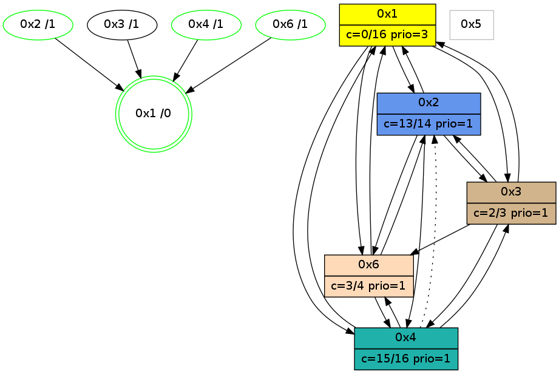

>> << IDX [start] -100 -25 -5 +0 +5 +25 [1180.174196]
 Previous packets
----------------------------------------------------------------------
1175.151664 beacon01(adaf) #0 coord=01,02,05,03,04,06 cycle=944.0ms assoc
-- color-indic=0 64 ea 98
1175.161626 beacon02(adaf) #0 coord=01,02,05,03,04,06 cycle=944.0ms assoc 64 bb 67
1175.171625 beacon05(adaf) #0 coord=01,02,05,03,04,06 cycle=944.0ms assoc 64 1d 4d
1175.181625 beacon03(adaf) #0 coord=01,02,05,03,04,06 cycle=944.0ms assoc 64 81 69
1175.191626 beacon04(adaf) #0 coord=01,02,05,03,04,06 cycle=944.0ms assoc 64 27 43
1175.201626 beacon06(adaf) #0 coord=01,02,05,03,04,06 cycle=944.0ms assoc 64 53 5f
----------------------------------------------------------------------
1176.156172 beacon01(adaf) #0 coord=01,02,05,03,04,06 cycle=944.0ms assoc
-- color-indic=0 64 a6 28
1176.166133 beacon02(adaf) #0 coord=01,02,05,03,04,06 cycle=944.0ms assoc 64 f7 d7
1176.176133 beacon05(adaf) #0 coord=01,02,05,03,04,06 cycle=944.0ms assoc 64 51 fd
1176.186134 beacon03(adaf) #0 coord=01,02,05,03,04,06 cycle=944.0ms assoc 64 cd d9
1176.196134 beacon04(adaf) #0 coord=01,02,05,03,04,06 cycle=944.0ms assoc 64 6b f3
1176.206134 beacon06(adaf) #0 coord=01,02,05,03,04,06 cycle=944.0ms assoc 64 1f ef
1176.217868 [Hello(4): seq=962 sym=1,3,6 asym=2 sysInfo=hasWarning,MaxColorIndicationCalled,ColoringModeIndicationCalled,MaxColorResponseCalled stat=1:8,11,11,0/3:12,0,1,0/6:4,0,1,0/2:0,0,0,0]
----------------------------------------------------------------------
1177.160680 beacon01(adaf) #0 coord=01,02,05,03,04,06 cycle=944.0ms assoc
-- color-indic=0 64 62 47
1177.170642 beacon02(adaf) #0 coord=01,02,05,03,04,06 cycle=944.0ms assoc 64 33 b8
1177.180641 beacon05(adaf) #0 coord=01,02,05,03,04,06 cycle=944.0ms assoc 64 95 92
1177.190640 beacon03(adaf) #0 coord=01,02,05,03,04,06 cycle=944.0ms assoc 64 09 b6
1177.200642 beacon04(adaf) #0 coord=01,02,05,03,04,06 cycle=944.0ms assoc 64 af 9c
1177.210642 beacon06(adaf) #0 coord=01,02,05,03,04,06 cycle=944.0ms assoc 64 db 80
----------------------------------------------------------------------
1178.165184 beacon01(adaf) #0 coord=01,02,05,03,04,06 cycle=944.0ms assoc
-- color-indic=0 64 3c 26
1178.175145 beacon02(adaf) #0 coord=01,02,05,03,04,06 cycle=944.0ms assoc 64 6d d9
1178.185145 beacon05(adaf) #0 coord=01,02,05,03,04,06 cycle=944.0ms assoc 64 cb f3
1178.195145 beacon03(adaf) #0 coord=01,02,05,03,04,06 cycle=944.0ms assoc 64 57 d7
1178.205146 beacon04(adaf) #0 coord=01,02,05,03,04,06 cycle=944.0ms assoc 64 f1 fd
1178.215148 beacon06(adaf) #0 coord=01,02,05,03,04,06 cycle=944.0ms assoc 64 85 e1
1178.226555 [Hello(1): seq=864 sym=2,4,6,3 color=0 sysInfo=hasWarning,MaxColorIndicationCalled,MaxColorResponseCalled,MaxColorRequestCalled,ColoringModeRequestCalled stat=2:14,3,3,0/4:0,0,0,0/6:2,2,8,0/3:7,0,4,0]
1178.229691 [STC(1) #0.210 new-neigh,tree-change,inconsistent-stability,stable,to-color d=0]
1178.232284 [Hello(4): seq=963 sym=1,3,6 asym=2 sysInfo=hasWarning,MaxColorIndicationCalled,ColoringModeIndicationCalled,MaxColorResponseCalled stat=1:8,11,11,0/3:13,0,1,0/6:4,0,1,0/2:0,0,0,0]
----------------------------------------------------------------------
1179.169690 beacon01(adaf) #0 coord=01,02,05,03,04,06 cycle=944.0ms assoc
-- color-indic=0 64 f8 49
1179.179650 beacon02(adaf) #0 coord=01,02,05,03,04,06 cycle=944.0ms assoc 64 a9 b6
1179.189653 beacon05(adaf) #0 coord=01,02,05,03,04,06 cycle=944.0ms assoc 64 0f 9c
1179.199651 beacon03(adaf) #0 coord=01,02,05,03,04,06 cycle=944.0ms assoc 64 93 b8
1179.209653 beacon04(adaf) #0 coord=01,02,05,03,04,06 cycle=944.0ms assoc 64 35 92
1179.219651 beacon06(adaf) #0 coord=01,02,05,03,04,06 cycle=944.0ms assoc 64 41 8e
1179.231586 [Hello(2): seq=1449 sym=3,6,1,4 color=13 sysInfo=hasWarning,MaxColorIndicationCalled,ColoringModeIndicationCalled,MaxColorResponseCalled stat=3:5,0,1,0/6:7,0,2,0/1:11,7,11,0/4:2,0,0,0]
1179.237008 [Hello(6): seq=877 sym=4,1,2 color=3 sysInfo=hasWarning,MaxColorIndicationCalled,ColoringModeIndicationCalled,MaxColorResponseCalled stat=4:6,5,6,1/1:4,13,5,0/2:10,0,2,0]
1179.240012 [STC(6)->1 #0.210 new-neigh,tree-change,inconsistent-stability,stable,to-color d=1]